P2
Outline
-
More about PD (Proportional-Derivative) control
- Stable PD control
-
Feedforward Motion Control
- Trajectory optimization
✅ 不通过施加净外力，构建物理准确的动画。
- Feedback Motion Control
- Static balance
P3
PD Control for Characters
基本方法
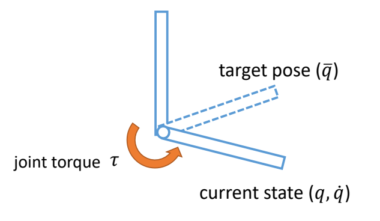
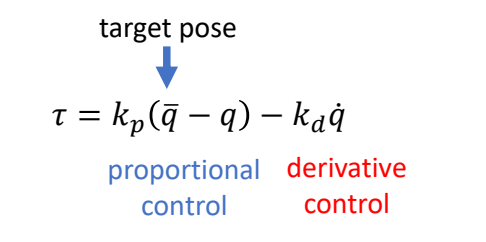
P4
存在的问题
PD control computes torques based on errors
Steady state error
This arm never reaches the target angle under gravity
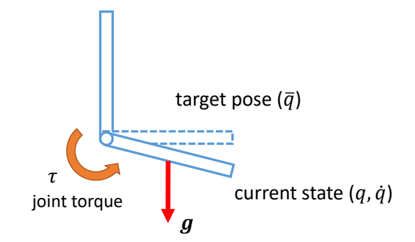
P5
Motion falls behind the reference
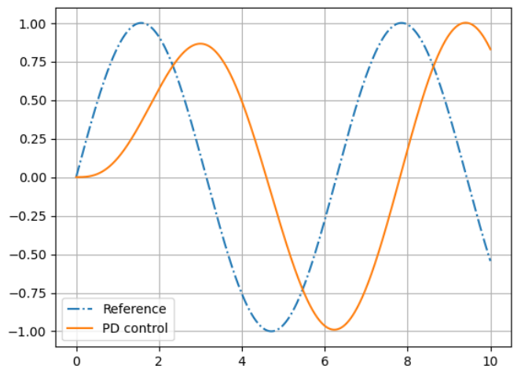
P7
稳定性
✅ 前面两个问题的根本原因是相同的，因为需要有误差才能计算force，有了force才能控制。
High-gain \((k_p)\) control is more precise but less stable…
✅ 增大 \(k_p\)能缓解以上问题，但大的 \(k_p\) 会带来肢体僵硬和计算不稳定。
P8
Stability of PD Control
以弹簧系统为例子
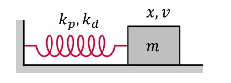
$$ \begin{matrix} f=-k_px-k_dv \quad\quad\quad\\ h: \text{ simulation time step} \end{matrix} $$
✅ PD control 的过程类似于一个弹簧系统。
✅ 因此利用弹簧系统中的半隐式欧拉来提升 PD 的稳定性。
半隐式欧拉的弹簧系统
Semi-implicit Euler Integration
$$ \begin{align*} v_{n+1} & =v_n+h\frac{f}{m} \\ x_{n+1} &=x_n+hv_{n+1} \end{align*} $$
半隐式欧拉的PD控制
✅ \(h\) 为时间步长。
✅ (1) 假设 \(m＝1\) (2) 代入 \(f\) 到方程组 (3) 方程组写成矩阵形式，得：
P11
$$ \begin{bmatrix} v_{n+1}\\ x_{n+1} \end{bmatrix}=\begin{bmatrix} 1-k_dh & -k_ph\\ h(1-k_dh) & 1-k_ph^2 \end{bmatrix}\begin{bmatrix} v_n \\ x_n \end{bmatrix} $$
P14
提取常数方程A，得：
$$ A=\begin{bmatrix} 1-k_dh & -k_ph\\ h(1-k_dh) & 1-k_ph^2 \end{bmatrix} $$
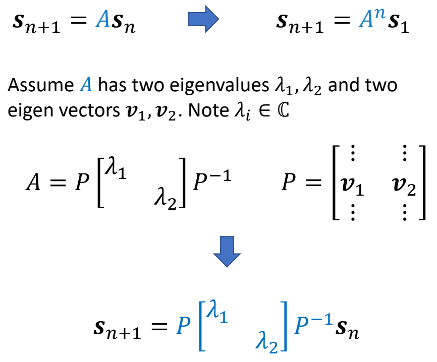
P19
PD控制的稳定性
\(\lambda _1,\lambda _2 \in \mathbb{C} \) are eigenvalues of \(A\)
✅ 基于中间变是 \(z_n\) 推导的过程跳过。
✅ 根据矩阵特征值的性质可直接得出结论。
if \(|\lambda _1|> 1\)
The system is unstable!
Condition of stability: \(|\lambda _i|\le 1 \text{ for all } \lambda _i\)
P20
通过h控制PD控制的稳定性
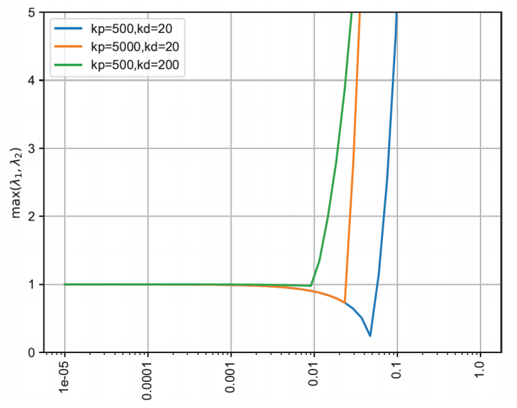
✅ 如果 \(k_p\) 和 \(k_d\) 变大，就必须以一个较小的时间步长进行仿真。
PD Control for Characters
P21
-
Determining gain and damping coefficients can be difficult…
- A typical setting \(k_p\) = 200, \(k_d\) = 20 for a 50kg character
- Light body requires smaller gains
- Dynamic motions need larger gains
-
High-gain/high-damping control can be unstable, so small times is necessary
- \(h\) = 0.5~1ms is often used, or 1000~2000Hz
- Higher gain/damping requires smaller time step
P22
A More Stable PD Control
半隐式欧拉 → 隐式欧拉
✅ 解决方法：半隐式欧拉 → 隐式欧拉，即用下一时刻的力计算下一时刻的速度。
- 半隐式欧拉
$$ \begin{align*} v_{n+1} & = v_n+h(-k_px_n-k_dv_n) \\ v_{n+1} & = x_n+hv_{n+1} \end{align*} $$
$$ \Downarrow $$
- 隐式欧拉
$$ \begin{align*} v_{n+1} & = v_n+h(-k_px_n-k_dv_{n+1}) \\ x_{n+1} & = x_n+hv_{n+1} \end{align*} $$
✅ 实际上，计算 \(f_{n＋1}\) 只使用 \(V_{n＋1}\) , 不使用 \(x_{n＋1}\) , 因为 \(x_{n＋1}\) 会引入非常复杂的计算。
✅ 由于 \(v_{n＋1}\) 未知，需通过解方程组来求解。
P23
得到的方程组为：
$$ \begin{bmatrix} v_{n+1} \\ x_{n+1} \end{bmatrix}=\frac{1}{1+hk_d} \begin{bmatrix} 1 & -k_ph\\ h & 1+k_dh-k_ph^2 \end{bmatrix}\begin{bmatrix} v_n\\ x_n \end{bmatrix} $$
P24
稳定性分析
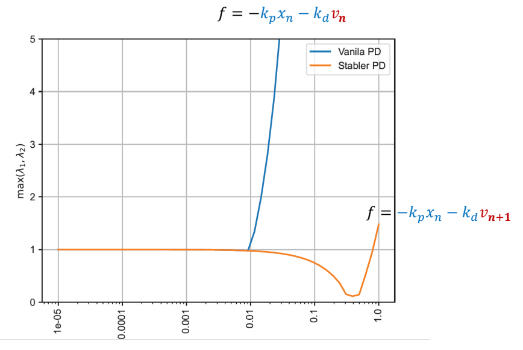
✅ \(v_{n}\) 换成 \(v_{n＋1}\) ，很大承度上提高了稳定性。
P25
相关工作
🔎
$$ \tau _{\mathrm{int} }=-K_p(q^n+\dot{q}^n \Delta t-\bar{q} ^{n+1})-K_d(\dot{q} ^n+\ddot{q} ^n \Delta t) $$
P26
PD Control for Characters
-
Determining gain and damping coefficients can be difficult…
- A typical setting \(k_p\) = 200, \(k_d\) = 20 for a 50kg character
- Light body requires smaller gains
- Dynamic motions need larger gains
-
High-gain/high-damping control can be unstable, so small times is necessary
- \(h\) = 0.5~1ms is often used, or 1000~2000Hz
- \(h\) = 1/120s~1/60s, or 120Hz/60Hz with Stable PD
- Higher gain/damping requires smaller time step
P28
Tracking Mocap with Root Forces/Torques
✅ 当前系统仍存的问题。(1) 稳态误差，相位延迟 (2) 缺少对根结点的力。
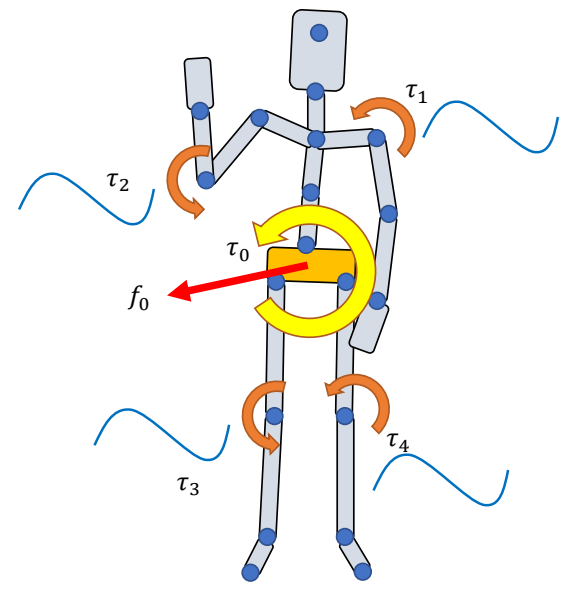
\(\tau _j\): joint torques
\(\text{ }\) Apply \(\tau _j\) to “child” body
\(\text{ }\) Apply \(-\tau _j\) to “parent” body
\(\text{ }\) All forces/torques sum up to zero
\(f_0,\tau _0\): root force / torque
\(\quad\quad\) Apply \(f _0\) to the root body
\(\quad\quad\) Apply \(\tau _0\) to the root body
\(\quad\quad\) Non-zero net force/torque on the character!
✅ 净外力能解决问题 2，但会有“提线木偶”的 artifacts.
✅ 解决方法：不直接学习目标轨迹，而是先对目标轨迹增加一个修正。即轨迹优化。
P30
Trajectory Optimization
🔎 [Witkin and Kass 1988 – Spacetime constraints]
✅ 轨迹优化的问题描述：
Find the trajectories:
$$ \begin{align*} \text{Simulation trajectory } & : S_0,S_1,\dots ,S_T \\ \text{Control trajectory } & : a_0,a_1,\dots ,a_{T-1} \end{align*} $$
✅ \(S\)：每一个时刻，角色的状态，包括位置、速度、朝向等。
✅ \(a\)：目标轨迹。
✅ 优化出 \(S\) 和 \(a\)，根据 \(S\) 和 \(a\) 得到关节力矩，关节力矩再控制角色。
that minimize the objective function
$$ \min_{(S_t,a_t)} f(S_T)+\sum_{t=0}^{T-1} f(S_t,a_t) $$
✅ 目标函数第一项：关于轨迹结束时刻的状态。
✅ 第二项：关于每一时刻的状态。
and satisfy the constraints:
$$ \begin{align*} M\dot{v}+C(x,v) & =f+J^T\lambda & \text{Equations of motion} \\ g(x,v) & \ge 0 & \text{constraints } \quad \quad\quad \end{align*} $$
✅ 约束第一项：运动学方程。
✅ 第二项：根据场景特殊定义的约束。
P33
简化问题分析
✅ 仍以方块移动到目标高度为例。
问题描述
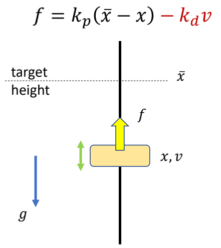
Compute a target trajectory \(\tilde{x} (t)\) such that the simulated trajectory \(x(t)\) is a sine curve.
目标函数
$$ \min_ {(x_n,v_n,\tilde {x} _n)} \sum _ {n=0}^{N} (\sin (t_n)-x_n)^2+\sum _ {n=0}^{N} \tilde {x}^2_n $$
✅ 目标函数：目标项＋正则项
约束
$$ \begin{align*} s.t. \quad & v _ {n+1}= v_ n+h (k _ p( \tilde {x} _n-x_n)-k _ dv_n) \\ & v _ {n+1} = x _ n + hv _ {n+1} \end{align*} $$
✅ 约束：半隐式积分的运动方程
P34
| Hard constraints: | 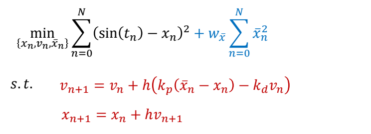 |
| Soft constraints: | 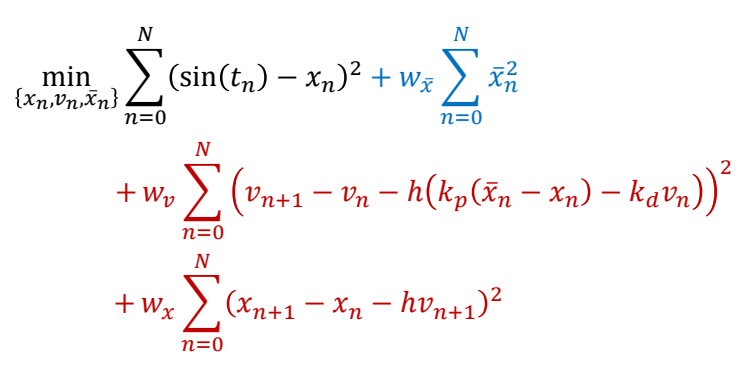 |
✅ 以两种方式体现约束：
✅（1）Hard：必须满足，难解，不稳定。
✅（2）Soft：尽可能满足，易求解。
P35
参数简化
Collocation methods:
Assume the optimization variables {\(x_n, v_n, \tilde{x}_n\)} are values of a set of parametric curves
- typically polynomials or splines
Optimize the parameters of the curves \(\theta\) instead
- with smaller number of variables than the original problem
✅ 要优化的参数量太大，难以优化。
✅ 解决方法：假设参数符合特定的曲线，只学习曲线的参数，再生成完整的参数。
P37
优化方法
How to solve this optimization problem?
Gradient-based approaches:
- Gradient descent
- Newton’s methods
- Quasi-Newton methods
- ……
P39
Trajectory Optimization for Tracking Control
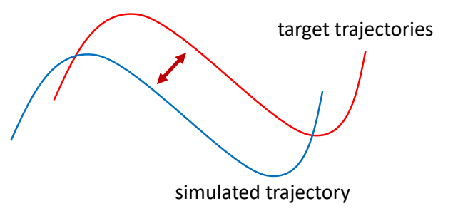
find a target trajectory
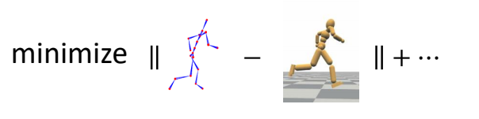
✅ 把动捕结果当成初始解，然后以优化的方式找到合理轨迹。
P40
Problem with Gradient-Based Methods
- The optimization problem is usually highly nonlinear, gradients are unreliable
- The system is a black box with unknow dynamics, gradients are not available
解决方法： Derivative-Free Optimization
-
Iterative methods
- Goal: find the variables 𝒙 that optimize \(f(x)\)
- Determining an initial guess of \(x\)
- Repeat:
- Propose a set of candidate variables {\(x_i\)} according to \(x\)
- Evaluate the objective function \(f_i=f(x_i)\)
- Update the estimation for \(x\)
-
Examples:
- Bayesian optimization, Evolution strategies (e.g. CMA-ES), Stochastic optimization, Sequential Monte Carlo methods, ……
✅ 启发式方法或随机采样方法，不需要梯度。
✅ 缺点：慢、不精确。
P43
CMA-ES
- Covariance matrix adaptation evolution strategy (CMA-ES)
- A widely adopted derivative-free method in character animation
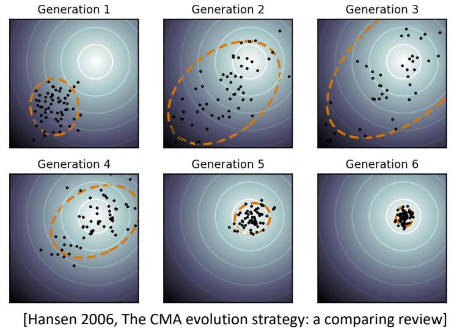
Goal: find the variables 𝒙 that optimize \(f(x)\)
- Initialize Gaussian distribution \(x\sim \mathcal{N} (\mu ,\Sigma )\)
- Repeat:
- sample candidate variables {\(x_i\)} \( \sim \mathcal{N} (\mu ,\Sigma )\)
- Evaluate the objective function \(f_i=f(x_i)\)
- Involve simulation and generate simulation trajectories
- Sort {\(f_i\)} and keep the top \(N\) elite samples
- Update \(\mu ,\Sigma \) according to the elite samples
✅ 优点：稳定，无梯度，可用于黑盒系统。
P44
🔎 [Wampler and Popović 2009 - Optimal Gait and Form for Animal Locomotion]
P45
✅ [Al Borno et al. 2013 - Trajectory Optimization for Full-Body Movements with Complex Contacts]
✅ 只优化目标轨迹，不优化仿真轨迹。因为仿真轨迹可以通仿真得到。
P46
SAMCON
✅ CMA-ES 的缺点：
（1）每次都从头到尾做仿真，计算量大。
（2）如果仿真轨迹长，则难收敛。
✅ 改进方法：每次采样，只考虑下面一帧。
🔎 SAmpling-based Motion CONtrol [Liu et al. 2010, 2015]
- Motion Clip → Open-loop control trajectory
- A sequential Monte-Carlo method
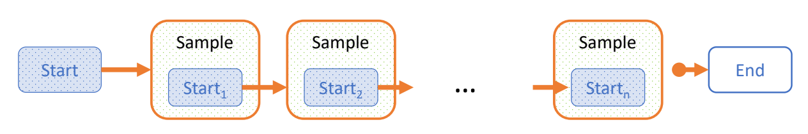
| 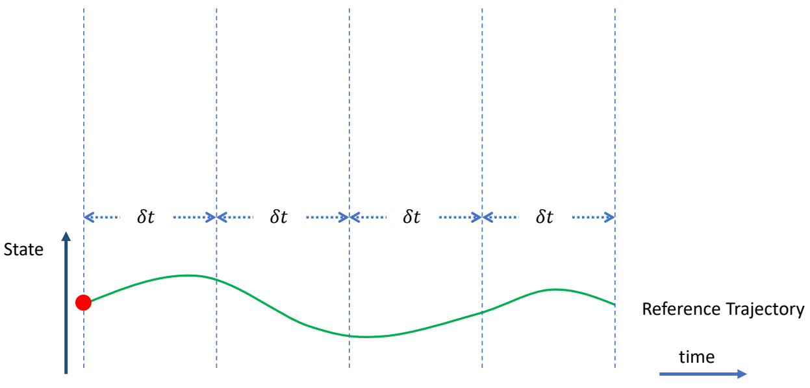 | ✅ 把轨迹分割开，每次优化一小段。 |
| 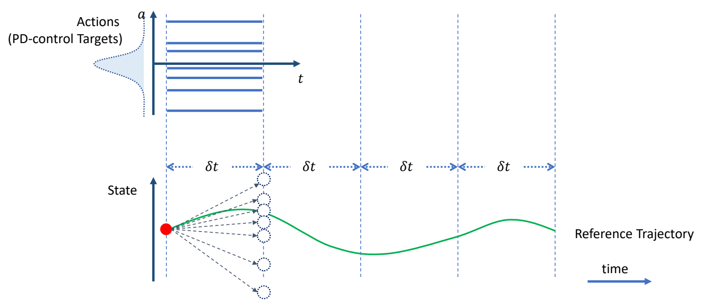 | ✅ 在目标轨迹上增加偏移，跟踪偏移之后的轨迹。 ✅ 偏移量未知，因此以高斯分布对偏移量采样。 ✅ 高斯分布可由其它分布代替。 |
| 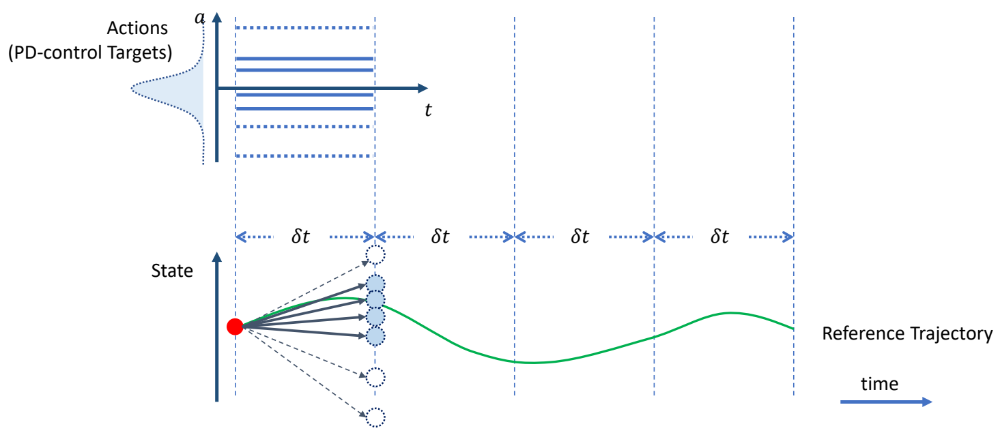 | ✅ 对每个偏移量做一次仿真，生成新的状态，保留其中与当目标接近的 N 个。 |
| 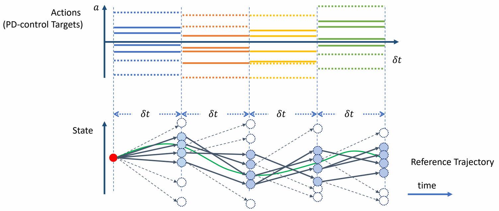 | ✅ 从上一步 N 个中随机选择出发点，以及随机的偏移量，再做仿真与筛选。 |
| 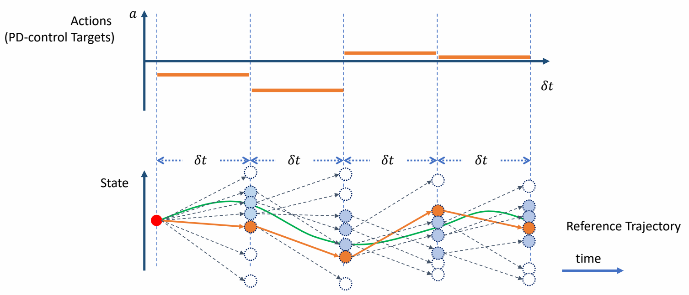 | ✅ 最终找到一组最接近的。 ✅ 原理：只选一个容易掉入局部最优，因此保留多个。 ✅ 蒙特卡罗＋动态规划 |
✅ 优点：穿膜问题也能被修正掉，可还原动捕数据，可根据环境影响而自动调整。
P54
Feedforward & Feedback Control
Feedforward Control
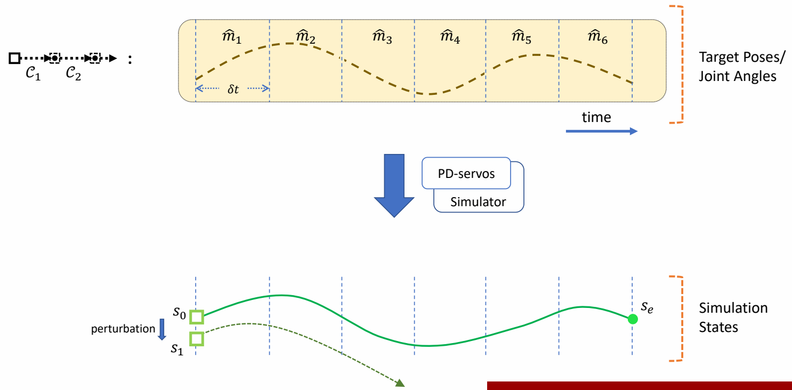
✅ 前馈控制，要求每一步的起始状态都是在获取轨迹过程中能得到的状态。
✅ 如果对起始状态加一点挠动，状态会偏离很远。
P56
Feedback Control
✅ 解决方法：引入反馈策略。根据当前偏差，自动计算出更正，把更正叠加到控制轨迹上。
| 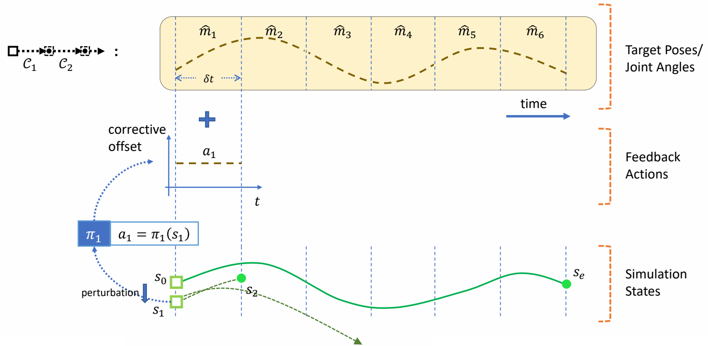 |
| 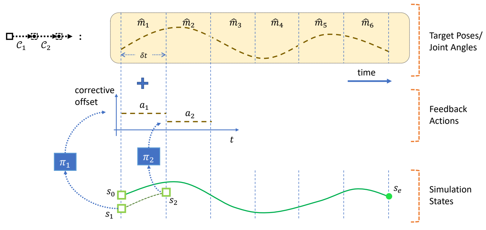 |
| 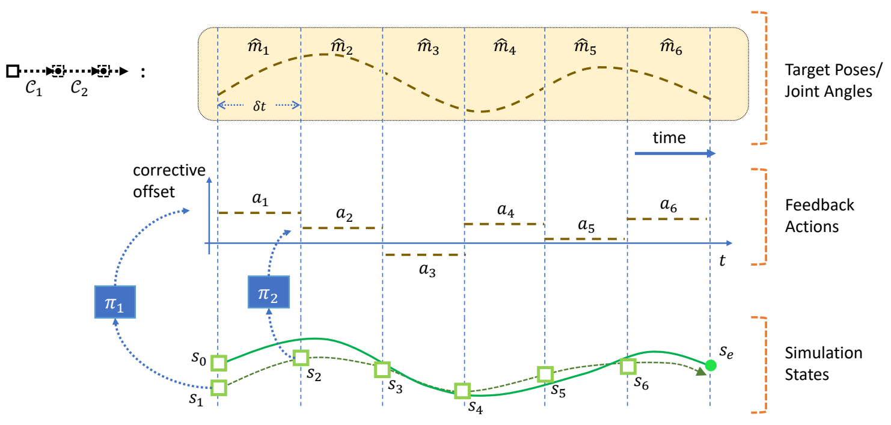 |
P62
Static Balance
定义
What is balance?
✅ Static Balance：在不发生移动的情况下，通过简单的控制策略，保证角色不摔倒。
✅ 平衡：质心在支撑面内。
P64
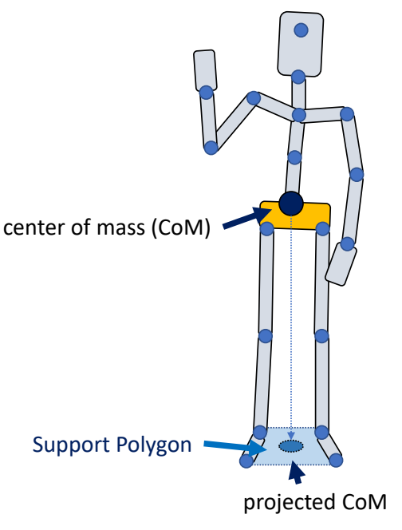
✅ 人的质心：每一段的质心的加权平均。
✅ 人的支撑面：两脚之内。
P66
A simple strategy： PD Control
A simple strategy to maintain balance:
根据条件计算力矩
-
Keep projected CoM close to the center of support polygon while tracking a standing pose
-
Use PD control to compute feedback torque
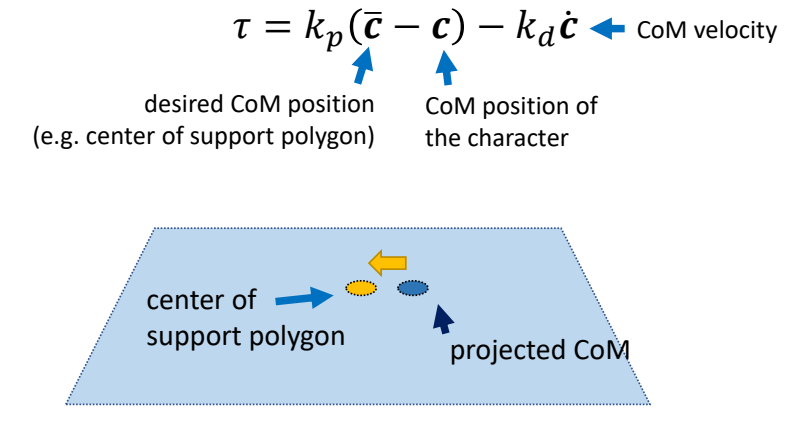
✅ 力矩 1：让角色保持某个姿势。
✅ 力矩 2：让质心与目标质心位置接近。
✅ 在某些关节上增加一些额外的力矩。
P68
施加力矩
- Apply the feedback torque at ankles (ankle strategy) or hips (hip strategy)
P69
Jacobian Transpose Control
✅ 实现 static balance，除了 PD 控制还有其它方法。
计算要施加的力
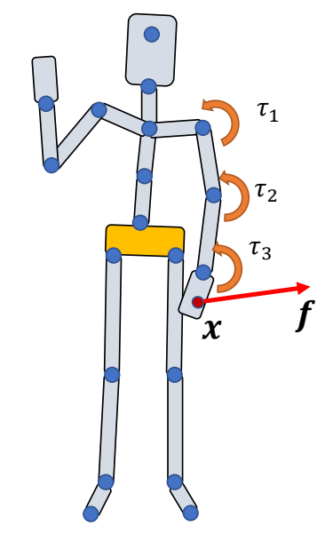
Can we use joint torques \(\tau _i\) to mimic the effect of a force \(f\) applied at \(x\)
- Note that the desired force \(f\) is not actually applied
- Also called “virtual force”
✅ 通过施加 \(\tau _1 ，\tau _2，\tau _3\) 来达到给 \(x\) 施加 \(f\) 的效果！
P73
把力转化为力矩
Make \(f\) and \(\tau _i\) done the same power
$$ P=f^T\dot{x}=\tau ^T\dot{\theta } $$
✅ 从做功的角度。功率 = fv
Forward kinematics \(x=g(\dot{\theta } )\Rightarrow \dot{x}=J \dot{\theta } \)
✅ \(g（* ）\) 是一个FK函数。其中：
$$ J=\frac{\partial g}{\partial \theta } $$
✅ 把 \( \dot{x } \) 代入上面公式得
$$ f^T J\dot{\theta } = \tau ^T\dot{\theta } $$
$$ \Downarrow $$
P76
$$ \tau =J^Tf $$
✅ 把 \( \tau\) 分解为每一个关节每一个旋转的 \( \tau\)．通过 Jacobian 矩阵的含义推出：
$$ \Downarrow $$
$$ \tau _i=(x-p_i)\times f $$
P77
用于Static Balance
A simple strategy to maintain balance:
-
Keep projected CoM close to the center of support polygon while tracking a standing pose
-
Use PD control to compute feedback virtual force
✅ P66 中在 Hips 上加力矩的方式只能进行简单的控制。
✅ 可以通过虚力实现相似的效果。
$$ f=k_p(\bar{c} -c)-k_d\dot{c} $$
✅ \(c\) 不一定是投影距离，还可以描述高度距离，实现站起蹲下的效果。
P78
- Assuming \(f\) is applied to the CoM, compute necessary joint torques using Jacobian transpose control to achieve it
✅ 但也不是真的加力，而是通过前面讲的 Jacobian transpose control 方法转为特定关节的力矩。
- Usually using the joints in the legs
✅ 最后达到在Hips上加力的效果
✅ 但这种方式能施加的力非常弱，只能实现比较微弱的平衡
P79
A fancier strategy:
- Mocap tracking as an objective function
- Controlling both the CoM position/momentum and the angular momentum
- Solve a one-step optimization problem to compute joint torques
🔎 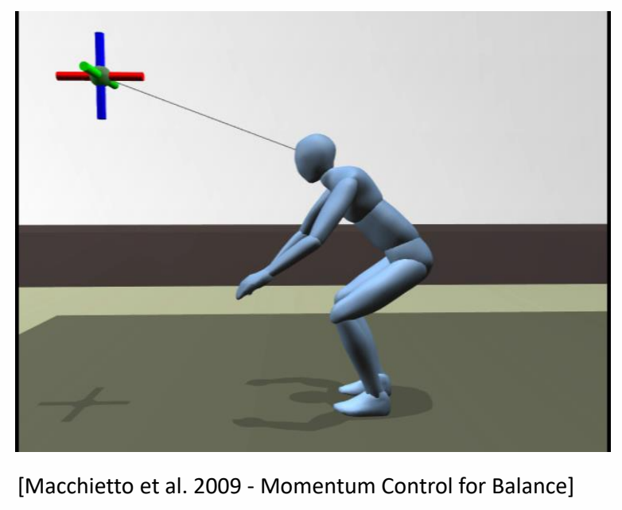
本文出自CaterpillarStudyGroup，转载请注明出处。
https://caterpillarstudygroup.github.io/GAMES105_mdbook/